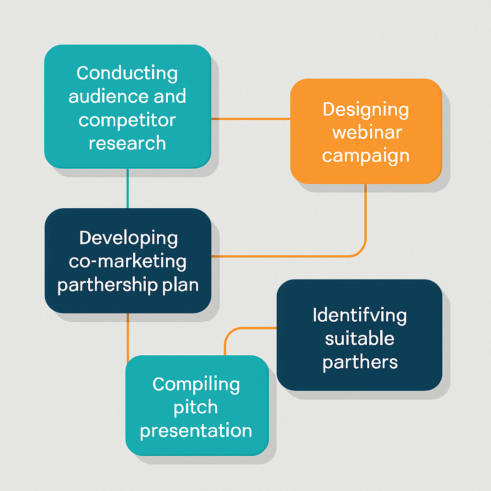
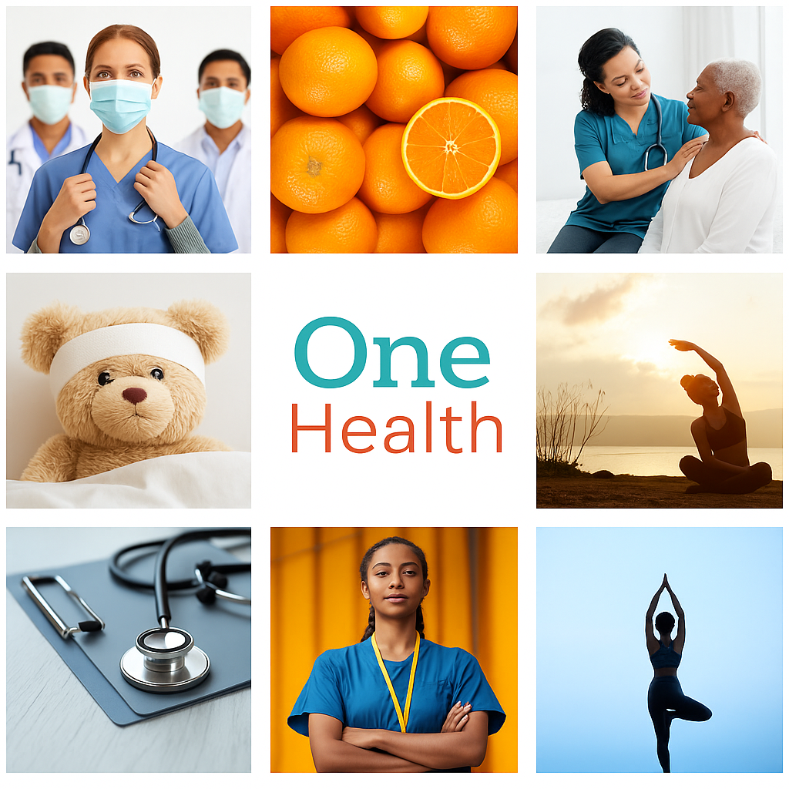

- The client and key deliverables
- My role and responsibilities
- Social media goals
- Branding
- Key steps in execution and rationale
- Skills and tools utilised
- Content pillars and content calendar
- Project success and key takeaways
- Links to project assets
Social media marketing · Case study
One Health · Social Media & Partnership Growth Strategy
A Social Media Marketing Case Study
A research-driven social media and partnership marketing concept for One Health, a long-established New York hospital looking to strengthen its online presence, rebuild brand trust, and grow a modern, community-centred wellness image.
Contents
Overview of the main sections of this case study.
Structure
The client & key deliverables
Understanding One Health and what they needed from this project.
Client background
About One Health
One Health is a general hospital in New York City that has been operating for more than 50 years. It offers diagnostic and therapeutic services and was once considered one of the top hospitals in the United States. Over time, however, its reputation has declined and its management has fallen behind on modern business and digital practices.
The hospital wanted to reposition itself as a trusted, community-centred institution by leveraging social media and strategic partnerships with relevant wellness brands.
Challenge & deliverables
Challenge: Limited brand visibility and low engagement on social media, combined with a dated digital presence.
Client need: A clear, actionable growth strategy to reach new audiences, strengthen trust, and showcase One Health’s wellness services online.
Key deliverables:
- Partnership marketing plan with co-branding activities
- Social media growth pitch
- “Healthy Living” webinar campaign concept
- Partner brand recommendations
- Reflection and case-study documentation
My role and responsibilities
How I approached the project and where I added value.
Ownership
My role was to research, design, and present a partnership-based growth strategy tailored to One Health’s mission and digital goals.
I was responsible for:
- Conducting audience and competitor research to identify collaboration opportunities.
- Developing a co-marketing partnership plan aligned with One Health’s preventive-care positioning.
- Identifying suitable partners, including Elyzian Fitness and Nature’s Way Health Shop.
- Designing a webinar campaign and mock social-media visuals in Canva.
- Compiling a professional pitch presentation to explain goals, rationale, and impact.
My role and responsibilities
How I approached the project and where I added value.
Ownership
My role was to research, design, and present a partnership-based growth strategy tailored to One Health’s mission and digital goals.
I was responsible for:
- Conducting audience and competitor research to identify collaboration opportunities.
- Developing a co-marketing partnership plan aligned with One Health’s preventive-care positioning.
- Identifying suitable partners, including Elyzian Fitness and Nature’s Way Health Shop.
- Designing a webinar campaign and mock social-media visuals in Canva.
- Compiling a professional pitch presentation to explain goals, rationale, and impact.

Social media goals
The three core objectives guiding the strategy.
Goals
Branding
Tone of voice and visual direction for One Health’s online presence.
Brand system

Brand tone
- Confident but never arrogant
- Conversational but always respectful
- Intelligent but not overly technical
- Helpful without being overbearing
- Clear, concise, and human
Image guidelines
- Authentic and positive imagery with real people and moments of care.
- Clean, bright visuals that feel trustworthy and modern.
- People-focused, with diverse individuals and an emphasis on human connection.
- Use of teal/cyan and orange as primary accent colours, based on the existing brand palette.
- High-resolution images with the logo placed on lighter backgrounds with breathing space.
Key steps in execution & why
The process behind the strategy and the reasoning for each step.
Process
-
Research & strategy development
Analysed target audiences and competitor activity to understand behaviour, gaps, and opportunities. Reviewed successful healthcare collaborations (e.g. Fitbit × Headspace) to model good practice. -
Partner identification & proposal
Shortlisted complementary wellness brands whose audiences overlapped with One Health’s mission: Elyzian Fitness (holistic training, yoga, mindfulness) and Nature’s Way Health Shop (nutrition and supplements). Their credibility and audiences support One Health’s preventive-health focus. -
Campaign design – “Healthy Living Webinar”
Proposed a co-hosted webinar featuring a One Health doctor and an Elyzian Fitness trainer. Topics included stress management, healthy habits, and the mind-body connection. Educational content builds authority, engagement, and trust. -
Content planning & presentation
Created social-media mock-ups promoting the webinar and partnership using Canva and the One Health colour palette. Drafted captions, hashtags, and clear calls to action, then presented everything in a concise pitch deck. -
Feedback & refinement
Reviewed structure and KPIs to ensure clarity and feasibility, adding metrics such as engagement rate, webinar sign-ups, and partner cross-mentions to make the plan measurable.
Skills & tools utilised
The practical capabilities used to deliver this work.
Execution
- Research & analysis: Competitor and partnership-trend research using Google search, Google Trends, and brand case studies.
- Content creation & design: Canva for post templates, webinar visuals, and pitch slides.
- Project planning: Google Sheets for planning timelines and tracking KPIs.
- Presentation design: Structured, client-ready deck outlining strategy, rationale, and expected outcomes.
- Communication & client management: Clear written explanations and progress reviews to keep alignment.
Content pillars & calendar
How the ongoing social content supports the overall strategy.
Content system
Instagram content pillars
The plan is organised around three main pillars:
- Everyday Health Explained: simple, practical posts that translate medical topics into everyday language.
- The One Health Advantage: content that highlights what makes the hospital unique, including services and values.
- Our People, Our Partners: spotlighting staff, patients’ stories (where appropriate), and collaboration partners.
Content calendar
The content calendar coordinates webinar promotion, evergreen health tips, and partner cross-promotion across a monthly schedule.
Pillar visuals
Example designs for the three One Health content pillars.
Everyday Health · Advantage · Our People
Project success & key takeaways
What this project demonstrates and what I learned from it.
Outcomes
Results & insights
- Positioned One Health as a collaborative, community-focused wellness brand.
- Provided a clear roadmap for cross-promotion and joint events with partners.
- Strengthened potential brand trust through credible wellness collaborations.
- Created a scalable framework for future partnerships and campaigns.
Top lessons
- Strategic partnerships can deliver more sustainable growth than isolated short-term campaigns.
- Effective client work depends on clarity, flexibility, and proactive communication.
- Educational content, such as webinars, builds lasting engagement and positions a brand as a trusted advisor.
Thank you
Interested in similar work for your brand? Get in touch.
Next steps
This case study is part of my broader portfolio of social media and digital marketing work. If you would like to discuss how a similar approach could support your organisation, feel free to reach out via the contact section on the main site.